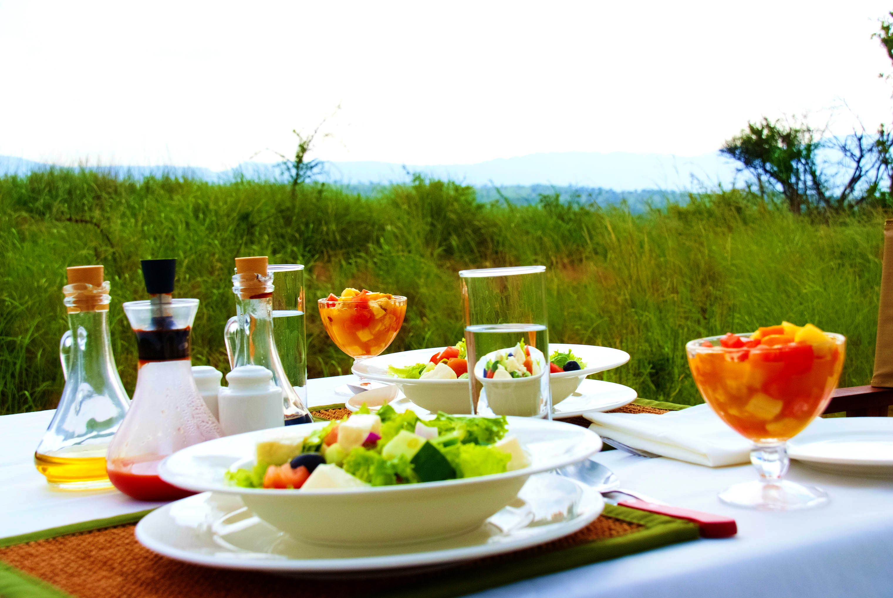

Safari Express
Arusha, Serengeti, Ngorongoro
Day 1: Arrival at Kilimanjaro International Airport
After a pleasant arrival at Kilimanjaro International Airport or any other border posts of the country, you will be welcomed by one of the Serengeti Kopjes Tours representative who will initially meet and greet you. After a short introduction of himself, departs for Serengeti National Park via Olduvai Gorge en route game viewing and photographing with the picnic lunch. The oldest and most popular National Park, a World Heritage Site recently proclaimed as 7th world wonder of the World, Serengeti is famed for its Annual Wildebeests Migration and uncountable number of predators. Dinner and Overnight at Sueño de Africa luxury Camp on full board basis.
Day 2 and Day 3: Serengeti National Park -Ngorongoro Conservation Area
 Early morning game drive in Serengeti, get back to the camp for breakfast before depart for full day game drive and photographing with the picnic lunch. Later drive back to the cam for dinner and overnight at Sueño de Africa luxury Camp on full board basis.
 Departs early for Ngorongoro crater tour,
descending to the crater floor for game drive and photographing with the picnic lunch. The largest collapsed unbroken caldera in the world with high concentration of big game wildlife’s.
Ngorongoro is a special place which is a Conservation Area, not a National Park; this means that the whole area is managed for both the animals and the local Maasai people who graze their
cattle alongside the indigenous wildlife. Proceed with your game drive in this so called “Man and Biosphere Reserve”. Dinner and Overnight at Eileen’s trees in on full board basis.
Departs early for Ngorongoro crater tour,
descending to the crater floor for game drive and photographing with the picnic lunch. The largest collapsed unbroken caldera in the world with high concentration of big game wildlife’s.
Ngorongoro is a special place which is a Conservation Area, not a National Park; this means that the whole area is managed for both the animals and the local Maasai people who graze their
cattle alongside the indigenous wildlife. Proceed with your game drive in this so called “Man and Biosphere Reserve”. Dinner and Overnight at Eileen’s trees in on full board basis.
Day 4: Departure
After morning breakfast departs at 08: 30 for you shall have a road transfer to Kilimanjaro International Airport for your flight back home as per your schedule or for your extension to Zanzibar.